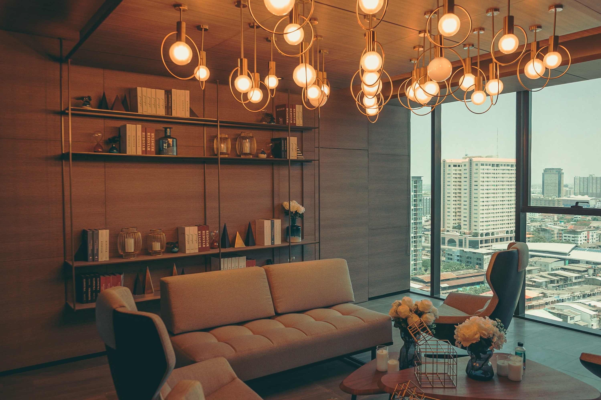

July 23, 2019 | 3 comments
Finding simplicity in life
Life can get complicated really quickly, but it doesn't have to be! There are many ways to simplify your life, a few of which we've explored in the past. This week we're taking a bit of a approach though, in how you can find simplicity in the life you already living.
continue reading